How I Configure My Blog (WordPress) using Docker and Deploy it to AWS
Hello, this is my first post and I want to share something that I just learned. Actually I am making this post just a few hours after I am done setting my server. So I‚Äôd like to share how I configure my server to run WordPress + NGINX + MySQL using Docker. Ok, lets get started üòâ
I’m inspired to create this post because of some article I read on how to install WordPress using docker-compose. The article I read is this article from DigitalOcean.
That article explained how to configure WordPress using docker in really good details. But I feel like maybe that article is too complicated and does not give you a way to automate your configuration. So in this post I will try üòâ to explained in simplified way, and guide you to automate the process of running WordPress using docker.
I’d like to divide this post into four parts:
- Setting up our web server (AWS EC2)
- Setting up our domain name (Rumah Web)
- Configure our configuration files
- Run / deploy into your server
1. Setting Up Our Server
In this post I will be using AWS EC2 Instance as our server, and I will be using t2.micro instance type (because this is what I get for AWS Free Tier üòâ ). I assume that you already have AWS account üôÅ .
Ok, lets get to it!.
Login to your AWS Console
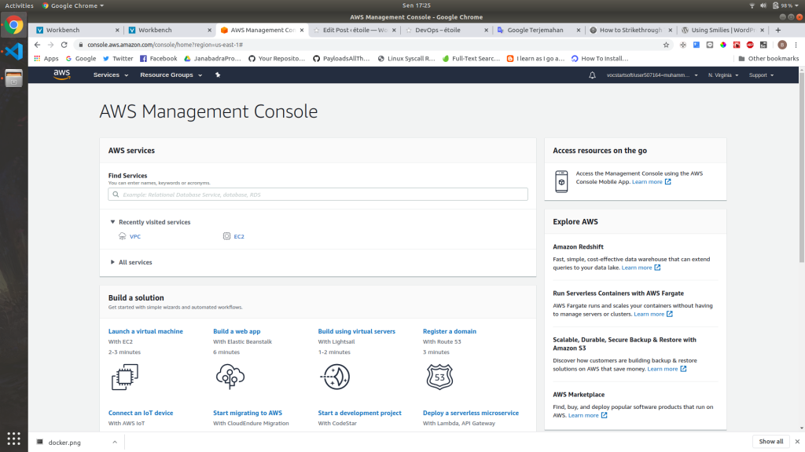
If you are successfully logged in, you should be greeted by that page. At first maybe it looks really complicated and scary (well at least for me üòÄ ).
I will not explain all the options because most of it is not related to this post (and I dont really know much about them üòÄ ). So from this page you just click the Launch a virtual machine option.
Choose your machine image
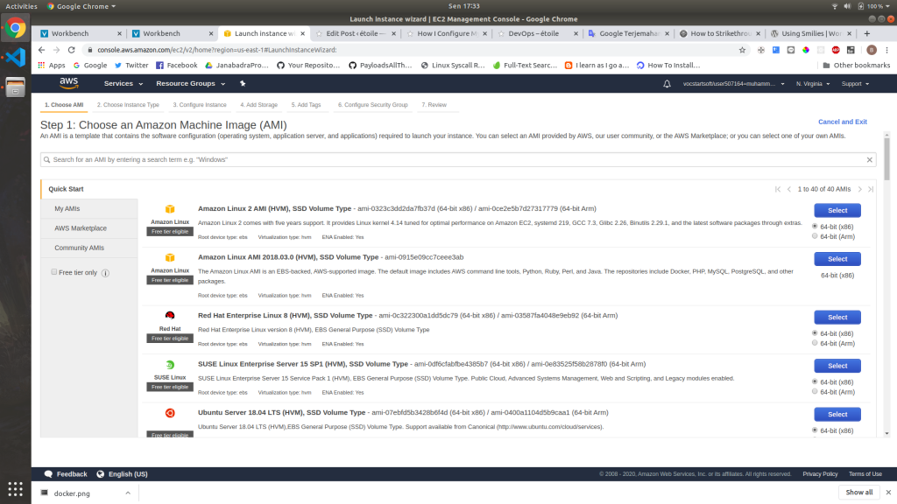
In this process, you basically need to pick what OS you want to use as your server. You can choose any of the OS, but for the sake of simplicity I recommend you to use Amazon Linux 2 AMI (HVM), SSD Volume Type (64 bit x86).
Click select on your preffered OS, and you will be redirected to the next step.
Review your configuration
After you select the OS type that you want. You will be redirected to another page to confirm your configuration. In this post we will be leaving all of the configuration as default. So you should just click Review and Launch.
After that you will be seeing another page asking you to review your configuration. You should just click Launch.
Save your key file
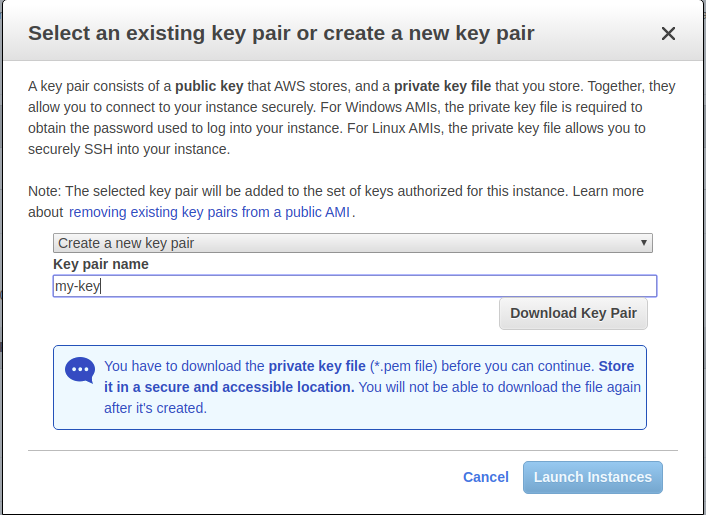
After you click Launch, there will be a modal popping up to ask you about the key you are gonna be using for your instance. This key will be needed if you want to connect to your machine.
In that modal you will be asked to use existing key (if it’s exists) or create a new key pair. In this tutorial I will recommend you to make a new key pair, by choosing the option to create a new key pair on the dropdown.
After that you should give your new key a name. This name does not really matter, but of course you should save it with a name that descriptive so you can easily locate the key for your instance.
After you give it a name, download the key. Make sure you save it in a safe place that no other people can easily access.
Launch your instance
After downloading the key, the button to Launch Instances should be available, and of course you should click it üòâ.
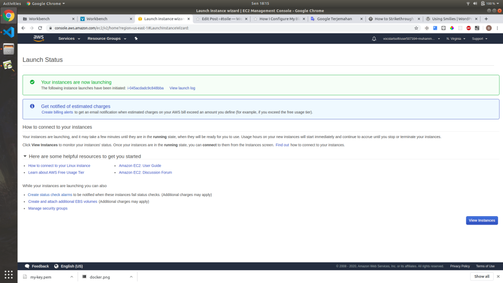
Voila! your instance is now launching. You can click View Instances if you want to see your new instance status.
Your instance
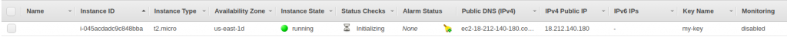
In your instance page, you can see all information about your instance like Public IP, Public DNS, and your instance status. This information will be usable for the next step when setting up your domain
Setting up security group
After your instance successfully ran. You must configure your security group, so your instance can be accessed from the internet.
Simply click your instance in instance page, and you will see instance information popping in the bottom of your page. On the right side of the Description tab, you can see security groups field.
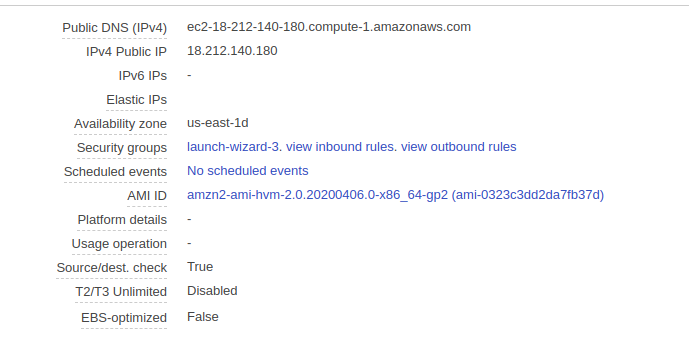
To configure your security groups, you can click on launch-wizard-x. You will be redirected to security groups configuration page. After that click your security groups id to advance to the next step.
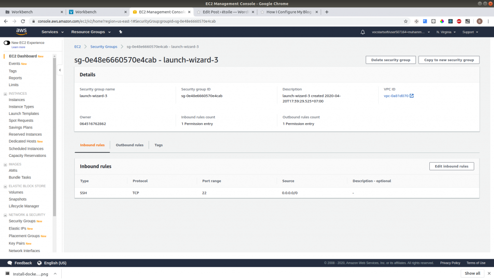
In this page you should see your security groups config. You can see that the default inbound rules (basically who can access your port X from the internet) is ssh which is used to connect to your machine later.
In this step we should expose port 80 (HTTP) and port 443 (HTTPS) to the internet, because our application will be accessed from that port. So you can click Edit inbound rules to edit your inbound rules.
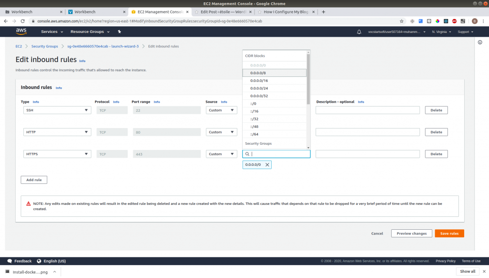
You can add the above configuration to allow access from the internet to port 80 and 443. And the click Save Rules.
Setting up your instance
To setting up your instance, first you must be connected to your instance. One of the best way to connect to your instance is using SSH (Secure Shell).
To connect to your instance, you can connect using the command provided by AWS Console on instance page. Yo can right click on your instance and then choose connect.
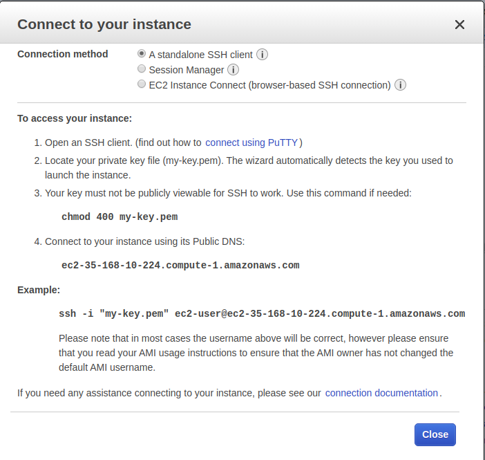
There you can follow the instruction to connect to your instance. Make sure your current working directory is the same directory as where you save your key file.
After you successfully logged in to your instance. There some apps that you need to install in order for you to configure your instance. You must install docker and some kind of text editor. In this tutorial I will use vim. Of course you can edit your configuration file in your local machine and then push it to repository, in that case you need to install git too. To install that dependency you can run this commands.
sudo yum install docker vim git
After you successfully installed that dependencies, your instance is ready to rock! üôÇ
2. Setting Up Your Domain
In this post I will you RumahWeb as my domain provider because its cheap. Of course you can use any domain provider that you like.
Register to RumahWeb
You can go too https://www.rumahweb.com/. In there you can search for the availability of your desired domain. And you can see your the pricing too.
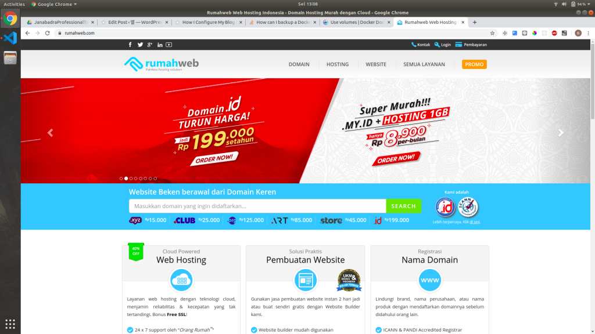
When you chosen your desired domain, you can then checkout and proceed with your payments.
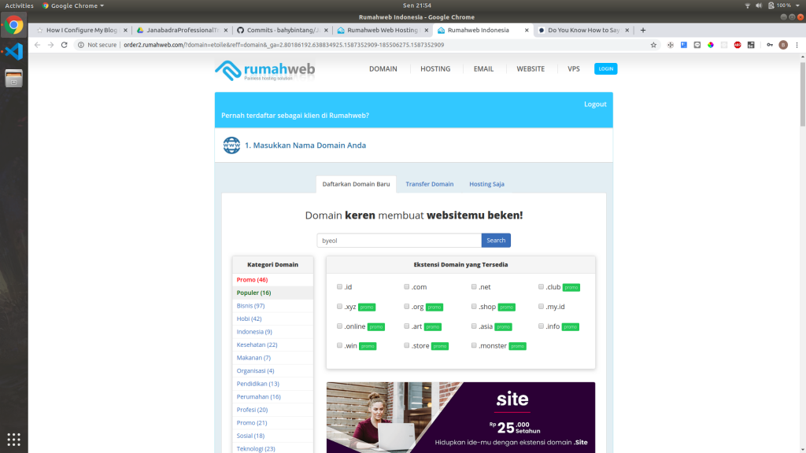
After you successfully paid you can see your domain is available in your dashboard. You click the domain tab and you will be redirected to domain configuration page.
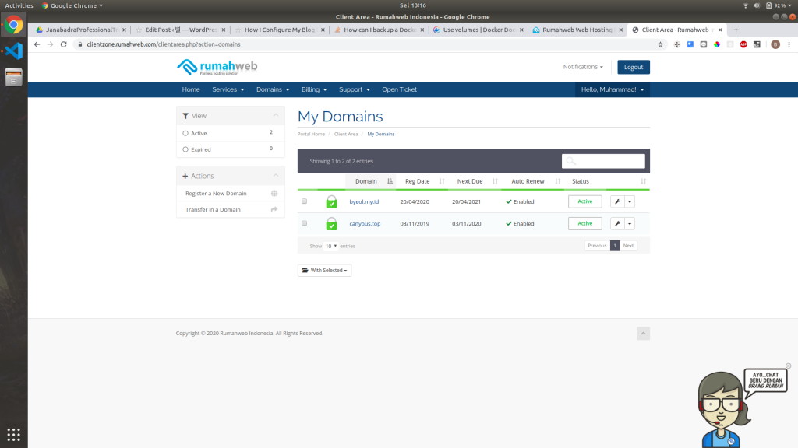
There you can see a list of domains that you own. You can click the wrench icon to configure your domain.
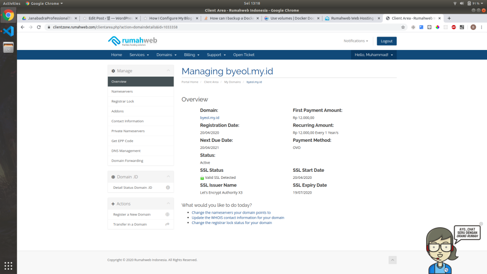
You can see your domain information in this page. To further configure your domain, click on DNS Management in the sidebar.
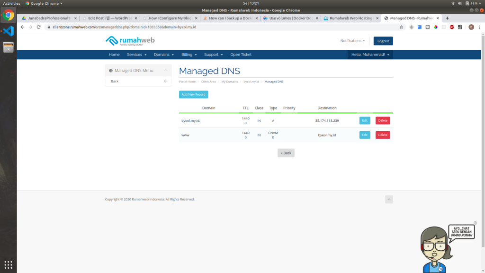
You must add a new record by clicking Add New Record
The first one that you must add is and A Record with your public IP as destination.

You can replace your-ip with your AWS EC2 instance public IP. You can see that in your AWS Console.
And the second one that you must add is CNAME Record pointing to your domain.
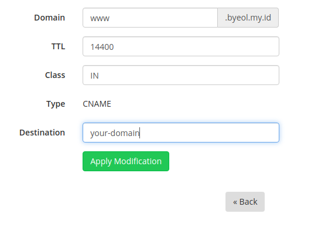
You can replace your-domain with you current domain that you are managing. And after that we finished setting up our domain. Yay üôÇ
3. Configure Our Configuration Files
We gonna make some configuration files so we can start WordPress in our server. You can make these files in your local machine then push it to git, or make it in your remote server (instance). In this post I will be using vim to edit our configuration files.
Making your working directory
To make it easier to develop, so your files doesn’t get mixed with other files you can make your own working directory, and change directory to that directory. By running this command:
mkdir my-blog
cd my-blog
You can replace my-blog with any names you want.
Making docker-compose.staging.yml
This docker-compose file is gonna let you configure your staging container. This will getting your database and wordpress up, and start your nginx in staging environment. I’m not gonna be explaining the configuration in here in detail because you can see the detail explanation in DigitalOcean post.
First you must create the file and edit it.
touch docker-compose.staging.yml
vim docker-compose.staging.yml
To change to insert mode you can press I in your keyboard.
And then paste this code:
version: "3"
services:
db:
image: mysql:8.0.19
container_name: db
restart: unless-stopped
env_file: .env
volumes:
- dbdata:/var/lib/mysql
command: "--default-authentication-plugin=mysql_native_password"
networks:
- app-network
wordpress:
depends_on:
- db
image: wordpress:5.4.0-php7.4-fpm-alpine
container_name: wordpress
restart: unless-stopped
env_file: .env
environment:
- WORDPRESS_DB_HOST=db:3306
- WORDPRESS_DB_USER=$MYSQL_USER
- WORDPRESS_DB_PASSWORD=$MYSQL_PASSWORD
- WORDPRESS_DB_NAME=$MYSQL_DATABASE
volumes:
- wordpress:/var/www/html
networks:
- app-network
webserver:
depends_on:
- wordpress
image: nginx:1.17.10-alpine
container_name: webserver
restart: unless-stopped
env_file: .env
ports:
- "80:80"
volumes:
- wordpress:/var/www/html
- ./nginx-conf/nginx.staging.conf:/etc/nginx/conf.d/nginx.conf
- certbot-etc:/etc/letsencrypt
networks:
- app-network
volumes:
certbot-etc:
wordpress:
dbdata:
networks:
app-network:
driver: bridge
And to save you can press Esc then type :wq and then hit Enter.
Making docker-compose.yml
This docker-compose file is gonna be used to create you production environment. This will run the certbot to configure your SSL, and recreate nginx to the production environment.
touch docker-compose.staging.yml
vim docker-compose.staging.yml
And paste this:
version: "3"
services:
db:
image: mysql:8.0.19
container_name: db
restart: unless-stopped
env_file: .env
volumes:
- dbdata:/var/lib/mysql
command: "--default-authentication-plugin=mysql_native_password"
networks:
- app-network
wordpress:
depends_on:
- db
image: wordpress:5.4.0-php7.4-fpm-alpine
container_name: wordpress
restart: unless-stopped
env_file: .env
environment:
- WORDPRESS_DB_HOST=db:3306
- WORDPRESS_DB_USER=$MYSQL_USER
- WORDPRESS_DB_PASSWORD=$MYSQL_PASSWORD
- WORDPRESS_DB_NAME=$MYSQL_DATABASE
volumes:
- wordpress:/var/www/html
networks:
- app-network
webserver:
depends_on:
- wordpress
image: nginx:1.17.10-alpine
container_name: webserver
restart: unless-stopped
env_file: .env
ports:
- "80:80"
- "443:443"
volumes:
- wordpress:/var/www/html
- ./nginx-conf/nginx.conf:/etc/nginx/conf.d/nginx.conf
- ./nginx-conf/options-ssl-nginx.conf:/etc/nginx/conf.d/options-ssl-nginx.conf
- certbot-etc:/etc/letsencrypt
networks:
- app-network
certbot:
depends_on:
- webserver
image: certbot/certbot
container_name: certbot
volumes:
- certbot-etc:/etc/letsencrypt
- wordpress:/var/www/html
command: certonly --webroot --webroot-path=/var/www/html --email $USER_EMAIL --agree-tos --no-eff-email --force-renewal -d $USER_DOMAIN -d www.$USER_DOMAIN
volumes:
certbot-etc:
wordpress:
dbdata:
networks:
app-network:
driver: bridge
Making nginx.staging.conf
This configuration file is gonna be used for nginx to run in staging environment
mkdir -p nginx-conf
touch nginx-conf/nginx.staging.conf
vim nginx-conf/nginx.staging.conf
And paste this:
server {
listen 80;
listen [::]:80;
server_name your.domain www.your.domain;
index index.php index.html index.htm;
root /var/www/html;
location ~ /.well-known/acme-challenge {
allow all;
root /var/www/html;
}
location / {
try_files $uri $uri/ /index.php$is_args$args;
}
location ~ \.php$ {
try_files $uri =404;
fastcgi_split_path_info ^(.+\.php)(/.+)$;
fastcgi_pass wordpress:9000;
fastcgi_index index.php;
include fastcgi_params;
fastcgi_param SCRIPT_FILENAME $document_root$fastcgi_script_name;
fastcgi_param PATH_INFO $fastcgi_path_info;
}
location ~ /\.ht {
deny all;
}
location = /favicon.ico {
log_not_found off; access_log off;
}
location = /robots.txt {
log_not_found off; access_log off; allow all;
}
location ~* \.(css|gif|ico|jpeg|jpg|js|png)$ {
expires max;
log_not_found off;
}
}
You should replace your.domain with your own domain name.
Get the recommended Nginx Security Parameters from Certbot
Run this command to download the configuration file from Certbot:
curl -sSLo nginx-conf/options-ssl-nginx.conf https://raw.githubusercontent.com/certbot/certbot/master/certbot-nginx/certbot_nginx/_internal/tls_configs/options-ssl-nginx.conf
Making run.sh to Automate the Deploy Process
This run.sh bash script will automate the deployment process, but it is just basically some bash command put together. Of course you can invoke the command manually üôÇ
touch run.sh
vim run.sh
And paste this:
#!/bin/bash
docker-compose -f docker-compose.staging.yml up -d
docker-compose up --no-deps certbot
docker-compose stop webserver
docker-compose up -d --force-recreate --no-deps webserver
And dont forget to make it executable using this command:
chmod +x run.sh
This script will basically run the database, wordpress, and nginx in staging environment. And then run the certbot in production mode. This certbot will verify the domain by challenging the webserver (nginx). Note that at this state nginx is still in staging environment.
If the certbot successfully confirming the domain, it will create an SSL configuration file in the docker volume certbot-etc which is mounted to /etc/letsencrypt in webserver (nginx) container.
After the certbot successfully confirming the domain, the script will recreate the webserver (nginx) in production mode.
4. Run / Deploy your Apps
To run your apps its actually very easy üôÇ . You just need to run the run.sh script.
./run.sh
And voila! you just need a few minutes until your worpress blog is up. Now you can access your domain and proceed with WordPress famous 5 minutes install üôÇ
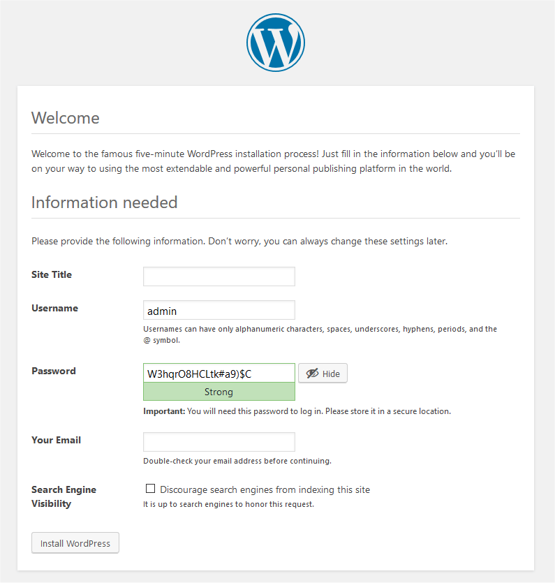
Conclusion
- This post is far from perfect, I’m too still learning. So I’m open to any suggestions.
- The method that is used in this post might not be the best way to configure WordPress. A lot of other method that is easier and achieve the same result.